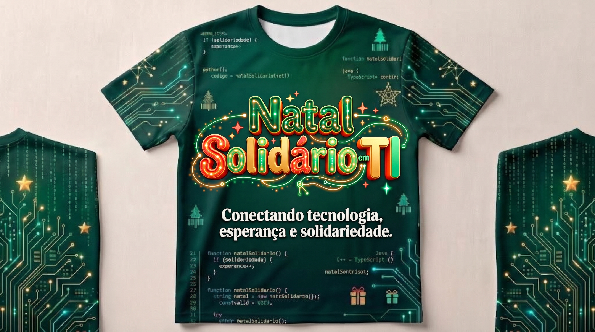
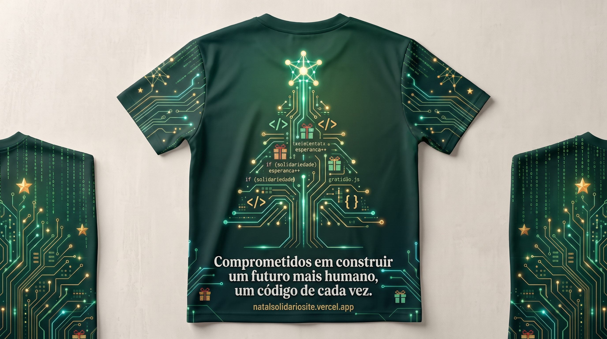
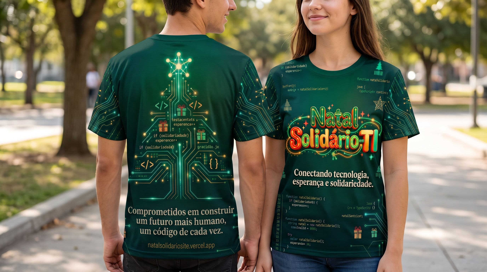

Cestas Básicas Completas
Alimentos nutritivos e itens para uma ceia natalina farta e digna para mais de 400 famílias cadastradas.

A comunidade de desenvolvedores, designers, fundadores e profissionais de TI de Manaus unidos para levar cestas básicas, brinquedos e dignidade a centenas de famílias neste Natal.

coordenacao@natalti.org
•
Em Manaus, o mesmo espírito inovador que constrói tecnologia se reúne para combater a desigualdade. Veja como nossa comunidade de TI transforma dedicação em dignidade real.

Alimentos nutritivos e itens para uma ceia natalina farta e digna para mais de 400 famílias cadastradas.
Presentes novos e jogos educativos entregues diretamente às crianças pelas mãos dos nossos voluntários.
Nutrição infantil e cuidados essenciais com leite em pó e fraldas para garantir saúde, conforto e dignidade aos bebês e crianças das famílias assistidas.
Acompanhe em tempo real o avanço da arrecadação. Nossa gestão é aberta, auditável e conectada diretamente ao Sistema de Gestão da Coordenação.
Garantem a ceia e os mantimentos de dezembro para lares em Manaus e proximidades.
300 de 400 famílias atendidasPresentes novos para iluminar a infância
Nutrição infantil e cuidado essencial
Escolha um valor para simular a transformação imediata que você gera em Manaus.
Com R$ 50,00 você garante um brinquedo novo para uma criança e apoia a alimentação e logística dos voluntários em campo. Ou vista a causa adquirindo a camisa oficial!
coordenacao@natalti.org
Toda doação gera impacto direto. Escolha a forma que melhor se adapta à sua vontade de transformar vidas neste Natal.
Qualquer valor ajuda na aquisição de alimentos, brinquedos e nos custos logísticos de distribuição.

Todo o lucro da camisa oficial financia a alimentação das famílias, leite e fraldas e o suporte logístico dos voluntários.
Entregue alimentos não perecíveis, brinquedos novos, leite e fraldas nos hubs parceiros da cidade.
A camisa oficial do Natal Solidário em TI une o ecossistema de tecnologia ao compromisso humano de fazer a diferença. 100% do lucro é destinado diretamente à compra de cestas básicas, brinquedos, leite e fraldas para as famílias de Manaus.
Estampa com o logotipo luminoso "Natal Solidário em TI", circuitos natalinos integrados e linhas de código comemorativas.

Verso OficialÁrvore de Natal esculpida em placa de circuito com o lema: "Comprometidos em construir um futuro mais humano, um código de cada vez."

Frente & Verso no CorpoVeja como veste: tecido dry-fit de alta qualidade, corte unissex confortável e cores vivas com excelente caimento para o dia a dia.
Respirável, leve e ideal para o clima de Manaus
Cores vivas e detalhes nítidos que não desbotam
Modelagem unissex pensada para todo mundo
Todo o lucro financia alimentação e doações
À frente do Natal Solidário em TI, nossa coordenação voluntária conecta desenvolvedores, designers e parceiros para transformar dedicação em acolhimento e dignidade para as famílias de Manaus.
Mobilização Social & Gestão de Entregas
Amigos do Sistema • Manaus, AMArticula com sensibilidade e zelo a triagem das famílias, a organização do voluntariado e a logística de campo, garantindo que cada cesta básica, brinquedo, leite e fralda cheguem com dignidade, carinho e respeito aos lares.
Articulação Tech & Gestão da Campanha
Amigos do Sistema • Manaus, AMConecta desenvolvedores, fundadores e empresas de tecnologia ao propósito social, unindo inovação, comunicação e transparência digital para multiplicar o alcance da campanha e impactar centenas de vidas.
Nossos coordenadores atuam de forma totalmente voluntária através do Amigos do Sistema. Todo valor doado via PIX e todo lucro da camisa oficial são revertidos integralmente para a aquisição de alimentos, brinquedos, leite e fraldas e custos operacionais de entrega em Manaus.
Empresas de tecnologia, hubs de inovação e startups de Manaus unidos por um propósito coletivo. Sua empresa também pode fazer parte dessa corrente do bem.


Uma comunidade inteira está esperando pelo seu gesto de amor e solidariedade.